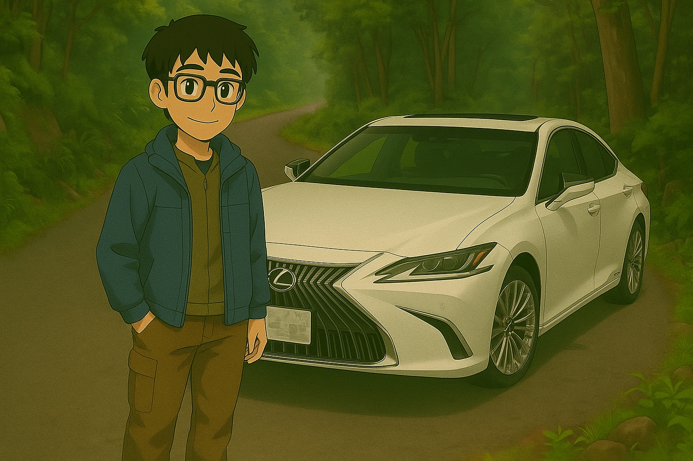

Hi, I'm Kevin
Hi, I'm Kevin


He received his M.Eng. degree in Computer Science and Engineering from Yuan Ze University, Taoyuan, Taiwan, in 2025. His research interests include image processing, computer vision and its integration with deep learning, as well as computational biology, medical informatics, smart manufacturing, information security, and knowledge representation and reasoning. From June 2021 to August 2022, he worked as a research assistant at the Center for Digital Cultures, Academia Sinica, Taiwan. From February 2023 to July 2025, he co-led research initiatives with Prof. Ran-Zan Wang, principal investigator of the Image Processing and Deep Learning Laboratory at Yuan Ze University. His responsibilities included research direction planning, project development, and supervising both undergraduate and graduate students in thesis preparation and academic writing. From September 2024 to January 2025, he served as a system administrator at the Office of Library and Information Services at Yuan Ze University, where he was responsible for network administration and infrastructure management. Between September 2023 and July 2025, he also worked as a research engineer at the Clinical AI Neuroimaging Laboratory at Yuan Ze University. His work involved developing brain MRI analysis models, integrating multimodal data (e.g., FLAIR, T1-weighted MRI, rs-fMRI, DTI, EEG, ApoE4 genotype) for biomarker discovery, validating models using cross-validation and ROC analysis, and collaborating with clinicians to ensure clinical relevance. In his free time, he enjoys playing tennis and badminton, and driving. He is also interested in aviation and plans to pursue a Private Pilot License for Airplane Single Engine Land in the future.
